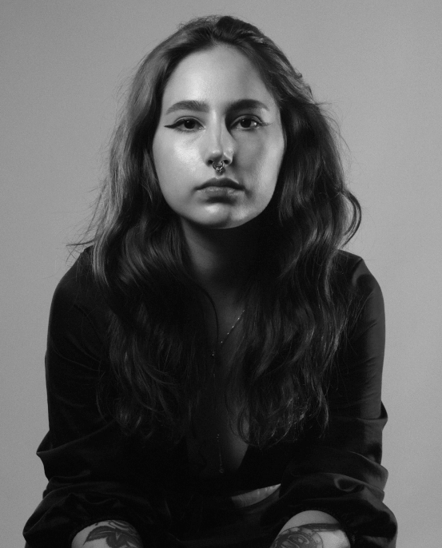

Hello, I'm
Gabriela Tonini

I am currently based in Lisbon, Portugal, originally from Brazil. Over the past five years, I have been actively involved in the field of design. I began my career in design agencies, where I honed my skills in various areas such as Visual Identity, Branding, Social Media, Packaging, Printed Materials, and Digital Ads.
In recent times, I have focused on UX/UI design, specifically working on the creation of Web Pages and Apps. This experience has allowed me to delve deeper into wireframing, prototyping, user-centered interfaces, and research tools.